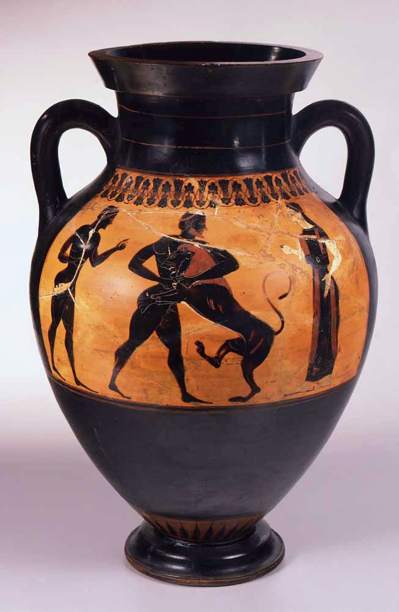

Learning Intention
Understand how to construct a well-argued 8-mark response that groups evidence thematically and balances AO1 knowledge with AO2 analysis.
Success Competencies:
- 1. I can group multiple labours into thematic arguments (e.g. "several labours show intelligence") rather than listing them one by one
- 2. I can balance AO1 knowledge (specific details, Greek names, what happened) with AO2 analysis (explaining WHY evidence matters, evaluating different viewpoints)
- 3. I can structure a balanced argument that considers both sides of the question (AGREE → DISAGREE → OVERALL JUDGEMENT) and uses Source A effectively throughout
Today's Objective
You will plan and structure an 8-mark response about Heracles' labours, evaluating whether he was more of a brute or a true hero. This lesson prepares you to write your full answer for homework.
Source A

Ancient Greek vase showing Heracles using brute strength against the Nemean Lion
'Heracles' labours show he was more of a brute than a true hero.' How far do you agree with this assessment? Use Source A as a starting point and your own knowledge in your answer.
[8]
Understanding the Question
This question asks you to evaluate - that means weighing up both sides of the argument. You need to:
- Consider evidence that Heracles was just a brute (used only physical strength, violence)
- Consider evidence that he was a true hero (cleverness, courage, serving Greece)
- Use Source A AND your knowledge of other labours
- Reach a balanced judgement
Key Terms
Brute: Someone who relies only on physical force and violence, without thinking or moral purpose
True Hero: Someone who shows courage, intelligence, serves others, completes difficult tasks for noble purposes
True Hero: Someone who shows courage, intelligence, serves others, completes difficult tasks for noble purposes